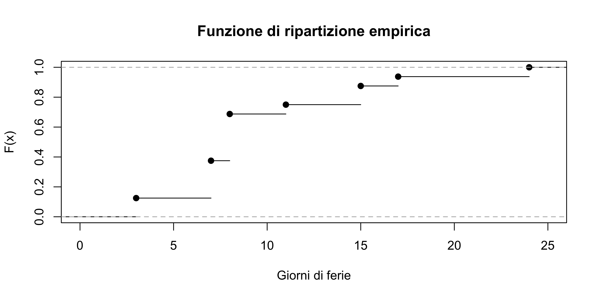

Statistica I
Esercizi 3: variabilità, istogrammi, boxplot, simmetria, curtosi
Homepage
Esercizio A
Il numero di giorni di ferie richiesti per il mese di giugno 2019 in un campione di n = 16 lavoratori è rappresentato nella seguente tabella
| Modalità c_j | 3 | 7 | 8 | 11 | 15 | 17 | 24 |
|---|---|---|---|---|---|---|---|
| Frequenze assolute n_j | 2 | 4 | 5 | 1 | 2 | 1 | 1 |
Rappresentare graficamente la funzione di ripartizione empirica.
Calcolare la mediana e i quartili.
Sono presenti outlier? Quindi, disegnare un boxplot.
Determinare media aritmetica.
Calcolare il campo di variazione, la differenza interquartile e lo scarto quadratico medio.
Esercizio B
Nel 1975 in Italia il numero di parti legittimi per età della madre al parto è stato il seguente:
| Età della madre | Numero nati |
|---|---|
| (9, 14] | 489 |
| (14, 20] | 94921 |
| (20, 24] | 200255 |
| (24, 29] | 274779 |
| (29, 34] | 144282 |
| (34, 44] | 99238 |
| (44, 55] | 1747 |
Si dica qual è l’unità statistica e qual è la variabile considerata.
Di che tipo di variabile si tratta?
Rappresentare graficamente il fenomeno. Attenzione: le classi non hanno dimensione uguale.
Calcolare la percentuale dei nati per fasce d’età della madre.
Esercizio C
Per n = 56 studenti si è rilevata la variabile voto all’esame di maturità. Il voto medio rilevato è pari a 76 e la varianza pari a 25.
Se si osserva un ulteriore studente che ha riportato un voto pari a 90. Qual è il nuovo voto medio?
Nella stessa ipotesi, come cambia la varianza?
Se lo studente che si aggiunge ha riportato un voto pari a 76 come cambiano le risposte ai quesiti precedenti?
Esercizio D
Si considerino i seguenti tre insiemi di n = 10 dati raccolti sulla medesima variabile in tre situazioni diverse: x = (−1.65, −5.74, −0.84, −4.50, 12.90, 0.84, −4.73, 7.89, 10.72, 4.40), y = (−5.34,−6.26,3.80,−2.15,−1.72,−7.35,6.84,5.92,1.72,7.76), z = (7.05, −0.43, −10.21, −5.44, −6.75, −12.33, 13.76, 21.51, 0.43, 6.14).
Si confrontino le variabilità, la simmetria e la curtosi di questi insiemi dapprima con uno strumento grafico e, successivamente, con appositi indici.
Sono presenti outlier nei precedenti insiemi?
Esercizio E
Sia x una variabile binaria, ovvero una variable che può assumere solo due modalità (0 e 1). La frequenza relativa associata al valore 1 è f_1 mentre quella associata al valore 0 è f_0 = 1 - f_1.
Si calcoli la varianza della variabile x in funzione di f_1, ovvero \text{var}(x). Si supponga quindi che f_1 = 0.4 e si dica quanto vale la varianza in questo caso particolare.
Si disegni il grafico di \text{var}(x) in funzione di f_1. Si trovi quindi il valore di f_1 che rende massima \text{var}(x).
Esercizio F
Il peso (in kg) degli individui maschi adulti di una certa popolazione si distribuisce con media \bar{x} = 70 e deviazione standard \sigma = 15. Supponendo di non aver accesso ai dati completi, cosa è possibile dire riguardo alla frequenza relativa di individui appartenenti alle seguenti classi?
- Frequenza relativa della classe di peso [50, 90].
- Frequenza relativa della classe di peso [55, 85].
- (Difficile) Frequenza relativa della classe di peso [50, 100].
Si commentino i risultati.
Suggerimento. Si faccia uso della disuguaglianza di Chebyshev. Per quel che riguarda il terzo punto, si noti che [50,90] \subset [50,100].
Esercizio G
I dati x_1,\dots,x_n e y_1,\dots,y_n sono rappresentati negli istogrammi seguenti
Quale delle due variabili presenta la maggiore variabilità?
A giudicare dal grafico, quando vale (approssimativamente) l’indice di asimmetria di Pearson? E quello di Bowley?
Esercizio H
Si consideri la popolazione residente delle province della regione Lombardia e Veneto, al primo Gennaio 2023. I dati ISTAT sono riportati nelle seguenti tabelle.
| Provincia (Regione Lombardia) | Popolazione residente (Gennaio 2023) |
|---|---|
| Varese | 877688 |
| Como | 595513 |
| Sondrio | 178472 |
| Milano | 3219391 |
| Bergamo | 1103768 |
| Brescia | 1253993 |
| Pavia | 534968 |
| Cremona | 351169 |
| Mantova | 404696 |
| Lecco | 332043 |
| Lodi | 227495 |
| Monza e Brianza | 871546 |
| Provincia (Regione Veneto) | Popolazione residente (Gennaio 2023) |
|---|---|
| Belluno | 197751 |
| Rovigo | 227418 |
| Venezia | 833703 |
| Vicenza | 850942 |
| Treviso | 876115 |
| Verona | 923950 |
| Padova | 928374 |
Si calcoli il rapporto di concentrazione di Gini per la regione Veneto e la regione Lombardia. Si commentino i risultati.
Si disegnino quindi le curve di Lorenz corrispondenti.